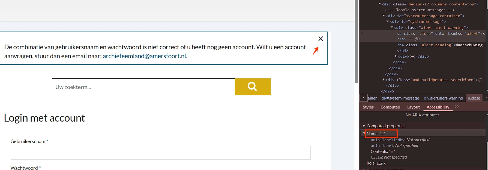
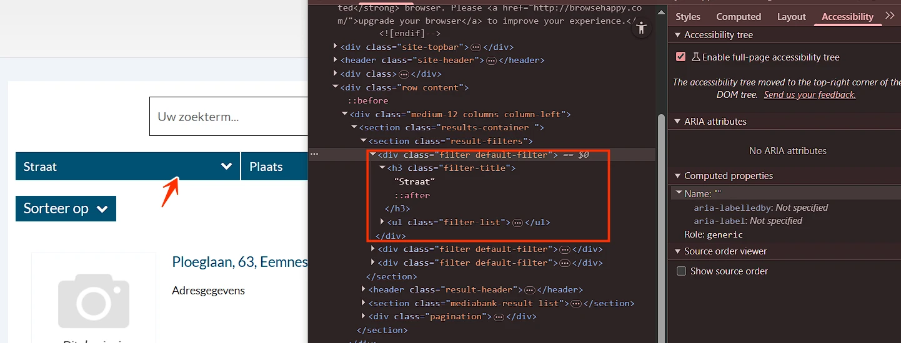
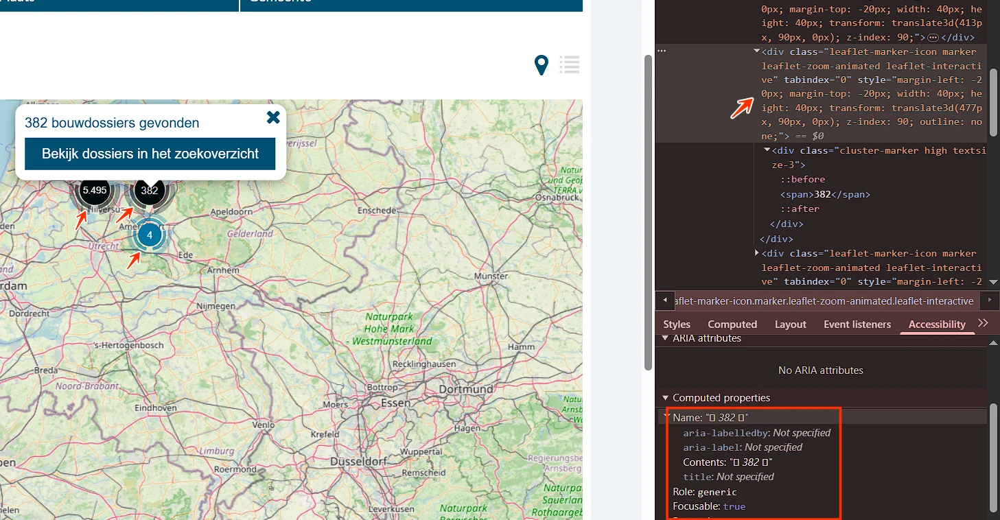
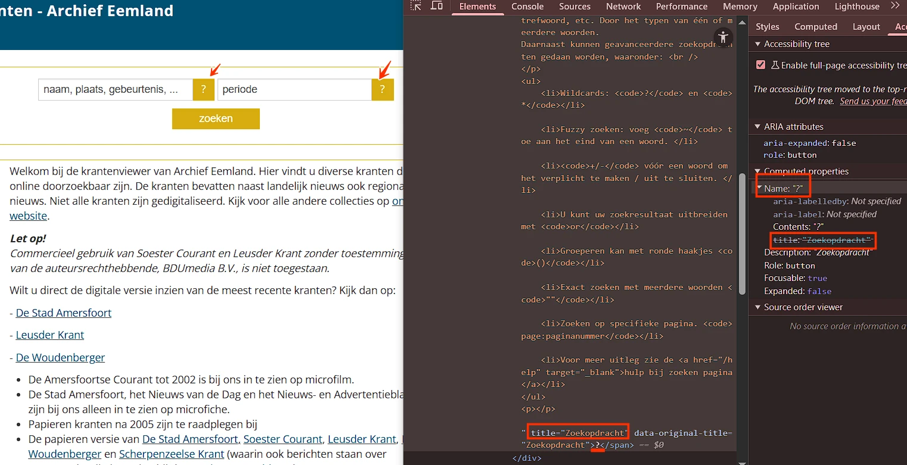
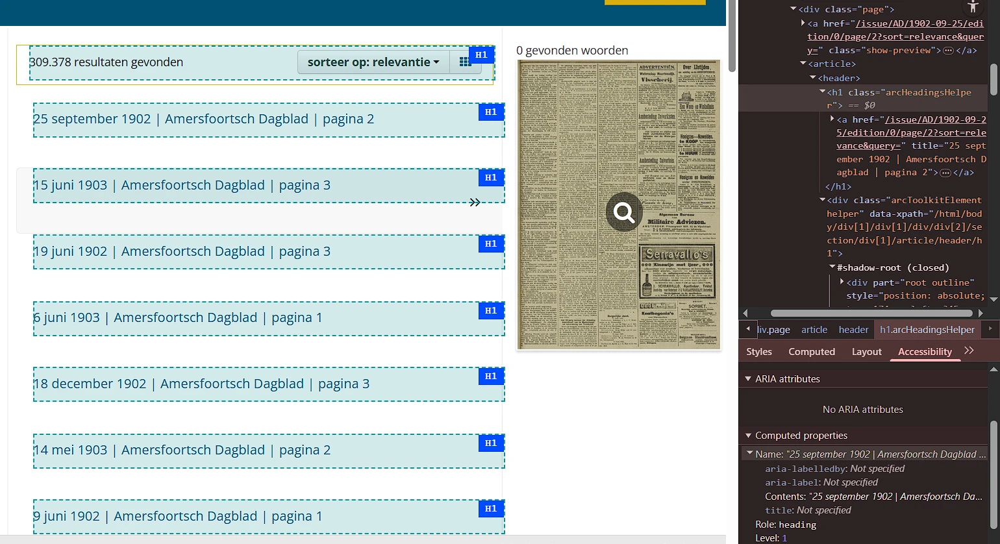
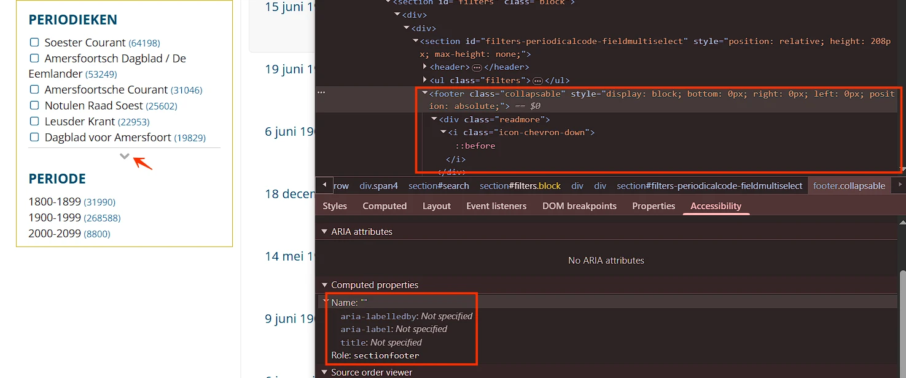
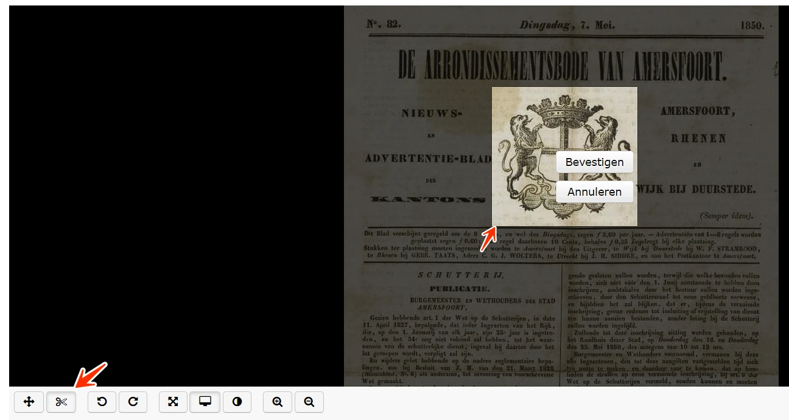

Audit digitale toegankelijkheid van website bouwdossiers.archiefeemland.nl & archiefeemland.courant.nu
Samenvatting
Wij hebben de websites bouwdossiers.archiefeemland.nl en archiefeemland.courant.nu onderzocht tussen 22 april en 6 mei 2026. Op dit moment is een deel van de succescriteria als voldoende beoordeeld. In dit rapport lees je welke punten nog verbetering behoeven en hoe deze kunnen worden aangepakt.
Op de pagina staan meerdere navigatie-landmarks (nav-element), maar niet allemaal hebben ze een toegankelijke naam. De zijnavigatie wordt bijvoorbeeld als navigatie-landmark blootgesteld zonder beschrijvende naam.
Wanneer er meerdere navigatie-regio's aanwezig zijn, moet elk landmark een unieke en betekenisvolle toegankelijke naam hebben, zodat gebruikers van assistieve technologieën onderscheid kunnen maken en efficiënt kunnen navigeren.
User story
Als screenreader-gebruiker die op landmarks navigeert, heb ik nodig dat elke navigatie-regio een duidelijke en unieke toegankelijke naam heeft, zodat ik het doel van elk navigatiegebied begrijp en direct naar de juiste kan springen. Wanneer sommige navigatie-landmarks geen naam hebben, hoor ik meerdere generieke "navigatie"-regio's en weet ik niet welke de zijnavigatie is of bij welke sectie hij hoort.
Oplossing
Geef elk navigatie-landmark een toegankelijke naam, bijvoorbeeld via aria-label of aria-labelledby, zodat elke navigatie-regio duidelijk kan worden geïdentificeerd.
Naast het zoekveld staat een knop met een wit vergrootglas-icoon op een lichtgele (#D7AC11) achtergrond. De contrastverhouding is 2,1:1 — te laag. Daardoor is het icoon moeilijk of onmogelijk te zien voor sommige gebruikers, vooral mensen met een visuele beperking of kleurenblindheid.
User story
Als bezoeker met een visuele beperking, leeftijdsgebonden contrastverlies of een scherm in fel zonlicht, heb ik nodig dat het icoon op elke icon-only-knop minimaal 3:1 contrast houdt tegen de knopachtergrond — omdat het icoon de enige indicatie is van wat de knop doet (er is geen tekstlabel), en een icoon dat ik niet kan zien is een knop die ik niet kan gebruiken.
Oplossing
Zorg dat het icoon een contrastverhouding van minimaal 3,0:1 heeft tegen zijn achtergrond.
#3 - Er is geen skip-link
Impact: GrootType: TechniekWCAG: 2.4.1EN: 9.2.4.1
Beschrijving
De website biedt geen skip-link (bijvoorbeeld "Spring naar hoofdinhoud"). Daardoor moeten toetsenbord- en screenreader-gebruikers op elke pagina door herhaalde inhoud (zoals header en navigatie) navigeren voordat ze de hoofdinhoud bereiken.
Dit kan navigeren trager en omslachtiger maken.
User story
Als toetsenbord- of screenreader-gebruiker heb ik een skip-link nodig om snel naar de hoofdinhoud te springen, zodat ik niet op elke pagina door herhaalde navigatie-elementen hoef te bladeren.
Oplossing
Bied bovenaan de pagina een zichtbaar-bij-focus skip-link die gebruikers laat doorslaan over herhaalde inhoud en direct naar het hoofdinhoudgebied te springen.
Op deze pagina zijn de volgende teksten koppen, maar de kop-elementen ontbreken. Strong-elementen worden gebruikt om ze er als koppen uit te laten zien. Zie "Welkom!", "Gemeente Baarn", "Gemeente Eemnes", "Het opzoeken en aanvragen van een bouwtekening", "Gebruikersvoorwaarden" en "Contact".
Het strong-element is voor semantische nadruk, niet om koppen te maken. Door het in plaats van kop-elementen (h1 t/m h6) te gebruiken, wordt de structuur van de inhoud verkeerd weergegeven en wordt deze ontoegankelijk voor assistieve technologieën.
User story
Als bezoeker die de pagina scant door door koppen te springen met een screenreader, heb ik nodig dat elke tekst die een sectie introduceert in een echt kop-element (h1-h6) staat — niet in strong of em, die alleen "benadrukt" betekenen — omdat strong en em onzichtbaar zijn voor mijn kop-snelkoppeling, de sectie die ze introduceren nooit verschijnt in mijn mentale overzicht van de pagina, en ik de hele pagina van boven naar beneden moet lezen om te vinden wat een ziende bezoeker in één oogopslag ziet.
Oplossing
Verwijder dit element en gebruik de juiste kop-elementen voor deze teksten.
#5 - Visuele lijst is niet opgemaakt met juiste lijst-elementen
Impact: GrootType: TechniekWCAG: 1.3.1EN: 9.1.3.1
Beschrijving
Onder de teksten "Gemeente Baarn", "Gemeente Eemnes" en "Het opzoeken en aanvragen van een bouwtekening" staan lijsten (met bullets en streepjes), maar deze zijn niet semantisch opgemaakt met HTML-lijst-elementen (ul, li). Zonder juiste lijst-opmaak kunnen screenreaders de inhoud niet als lijst herkennen of het aantal items aankondigen. Daardoor missen gebruikers van assistieve technologie belangrijke structurele informatie die ziende gebruikers visueel wel waarnemen.
User story
Als bezoeker die de pagina met een screenreader leest, heb ik nodig dat elke visuele lijst — bullets, nummers, streepjes — als een echte ul of ol met li-items is opgemaakt — omdat mijn screenreader "lijst van N items" aankondigt voordat hij ze leest, de structuur me vertelt wat ik kan verwachten, en zonder die opmaak de items hun nummering kwijtraken, hun aantal kwijtraken, en als één lange ononderbroken zin worden gelezen.
Oplossing
Maak de visuele lijsten op met de juiste HTML-lijst-elementen: ul voor ongeordende lijsten of ol voor geordende lijsten, met elk item gewikkeld in een li-element.
Op deze pagina staat een formulier met invoervelden voor persoonlijke informatie (bijvoorbeeld Gebruikersnaam, Wachtwoord) zonder het autocomplete-attribuut. Wanneer formulieren persoonlijke gegevens verzamelen, moet het juiste autocomplete-attribuut bij deze invoerelementen worden gebruikt. Daarmee kunnen browsers en assistieve technologieën gebruikers helpen, bijvoorbeeld door velden automatisch in te vullen.
Als bezoeker die formulieren invult met een wachtwoordmanager, met browser-autofill, met een symbolenset, met switch-besturing of met elk hulpmiddel dat voor mij typt omdat typen traag of pijnlijk is, heb ik nodig dat elk invoerveld dat om persoonlijke informatie vraagt (naam, e-mail, telefoon, adres, postcode, …) het juiste autocomplete-attribuut draagt — omdat zonder dit attribuut mijn browser niet kan aanbieden om het veld in te vullen, mijn wachtwoordmanager geen idee heeft wat hij moet plakken, en ik elk teken met de hand moet typen ook al staan de gegevens al opgeslagen op mijn apparaat.
Oplossing
Het autocomplete-attribuut ontbreekt op dit moment in deze invoervelden. Meer informatie over het gebruik van dit attribuut en de vereiste waarden vind je op: https://www.w3.org/TR/WCAG21/#input-purposes.
Als bezoeker met een visuele beperking, leeftijdsgebonden contrastverlies of een scherm in fel zonlicht, heb ik nodig dat de rand van elk invoerveld minimaal 3:1 contrast houdt tegen de pagina-achtergrond — omdat de rand mij vertelt "dit is een veld waarin je kunt typen", en een rand die ik niet kan zien laat me achter met een onzichtbaar formulierveld waarvan ik niet weet dat het er is.
Oplossing
Dit voldoet niet aan de minimale contrasteis van 3,0:1 voor randen van invoervelden tegen aangrenzende gebieden. Onvoldoende contrast maakt het lastig om de grenzen van het invoerveld visueel te onderscheiden, wat de bruikbaarheid beïnvloedt.
Op deze pagina staat een formulier, voorafgegaan door de tekst "Login met account". Deze groep is in een fieldset-element geplaatst, maar het legend-element ontbreekt. Het legend-element is cruciaal om een label of naam aan de groep invoervelden te geven.
User story
Als bezoeker die gegroepeerde formuliervelden invult met een screenreader, heb ik nodig dat elke fieldset een legend bevat die de groep beschrijft — omdat zonder die legend mijn screenreader een ongelabelde groep invoervelden aankondigt, het groepslabel dat ziende bezoekers zien voor mij ontbreekt, en ik niet kan bepalen bij welke vraag de bedieningen horen.
Oplossing
Voeg een legend-element toe binnen de fieldset en vul het met de tekst "Login met account" (of een meer beschrijvend en passend label) om het doel van de groep duidelijk te identificeren.
#9 - HTML5-validatie wordt gebruikt
Impact: GrootType: TechniekWCAG: 3.3.1EN: 9.3.3.1
Beschrijving
Op deze pagina gebruikt een formulier HTML5-validatie en toont standaard HTML5-foutmeldingen wanneer het wordt verzonden met lege of onjuiste gegevens. Deze standaardmeldingen worden niet betrouwbaar ondersteund in alle browsers en screenreaders. Elke browser geeft ze anders weer en hun toegankelijkheid (bijvoorbeeld volledigheid, duur) is niet gegarandeerd.
Als bezoeker die formulieren invult met een screenreader, met cognitieve beperkingen of in een niet-standaardbrowser, heb ik nodig dat elke fout via het formulier zelf wordt gerapporteerd — een duidelijke inline-melding die aan het veld is gekoppeld — niet alleen via de native HTML5-validatiepopup van de browser — omdat het formulier op dit moment leunt op HTML5-validatie, browsers die meldingen verschillend (en niet altijd toegankelijk) tonen, de popup soms kort of onvolledig is, en ik niet betrouwbaar kan zien wat er fout ging.
Oplossing
Implementeer aangepaste foutmeldingen voor dit formulier om consistente en toegankelijke foutfeedback te bieden. Daarnaast is het belangrijk om alle andere formulieren op de website te controleren op vergelijkbare afhankelijkheid van HTML5-standaardfoutmeldingen en waar nodig dezelfde oplossing toe te passen.
#10 - Linknaam beschrijft het doel van de link niet
Impact: GrootType: TechniekWCAG: 2.4.4EN: 9.2.4.4

Beschrijving
Wanneer een formulier met fouten wordt verzonden, verschijnt er een melding met een "x" sluit-link. De toegankelijke naam "x" beschrijft het doel van de link onvoldoende. Daardoor is het voor blinde gebruikers en mensen die op een screenreader leunen lastig om het doel van de link te begrijpen. De toegankelijke naam moet de actie van de link duidelijk en beknopt overbrengen.
User story
Als bezoeker die links activeert met een screenreader, met voicecontrol of die de pagina met afbeeldingen uit leest, heb ik nodig dat de toegankelijke naam van elke link beschrijft wat het activeren ervan zal doen — niet de visuele vorm, de bestandsnaam of een label dat niets met de functie te maken heeft — omdat de aangekondigde naam op dit moment niet overeenkomt met de daadwerkelijke actie, en mijn screenreader me misleidt over wat ik op het punt sta te doen.
Oplossing
Werk de toegankelijke naam bij (bijvoorbeeld via aria-label) zodat hij het doel van de link nauwkeurig weergeeft, bijvoorbeeld "Sluiten melding".
Als bezoeker die met het toetsenbord, met een schermvergroter of met beperkte motoriek navigeert, heb ik nodig dat elk submenu dat bij hover of focus verschijnt te sluiten is zonder mijn muis of focus te verplaatsen — bijvoorbeeld door op Escape te drukken — omdat het submenu nu automatisch opent en de pagina-inhoud eronder bedekt, ik geen manier heb om het te sluiten zonder weg te bewegen van de trigger, en de enige manier om te lezen wat eronder stond is ergens anders heen navigeren waardoor ik mijn plek kwijtraak.
Oplossing
Gebruikers moeten deze aanvullende inhoud eenvoudig kunnen sluiten zonder dat dat acties met muis of toetsenbord vereist. Een gebruikelijke en toegankelijke oplossing is gebruikers de aanvullende inhoud te laten sluiten met de Escape-toets. Dat biedt een snelle manier om de overlappende inhoud te sluiten en de focus op de relevante delen van de pagina te houden.
#12 - Contrastverhouding van tekst en achtergrond is minder dan 4,5:1
Onder het zoekveld staan secties waar bij hover aanvullende inhoud met links verschijnt. Naast deze links staat lichtgrijze (#A6A6A6) tekst met getallen op een witte achtergrond, bijvoorbeeld "(1.023)". De kleurcontrastverhouding is te laag: 2,4:1.
Als bezoeker met een visuele beperking, leeftijdsgebonden contrastverlies of een scherm in fel zonlicht, heb ik nodig dat elke tekst kleiner dan 24px en niet vetgedrukt minimaal 4,5:1 contrast houdt tegen de achtergrond — omdat de tekst onder de standaardcontrastdrempel valt en de hier gebruikte kleuren eronder zakken, en het resultaat is loopkende tekst die ik moet inspannen om te lezen of helemaal oversla.
Oplossing
Deze tekst is kleiner dan 24px en niet vetgedrukt, dus het contrast moet minimaal 4,5:1 zijn.
#13 - Knop heeft niet de juiste rol
Impact: GrootType: TechniekWCAG: 4.1.2EN: 9.4.1.2

Beschrijving
Onder het zoekveld staan secties waar bij hover aanvullende inhoud met links verschijnt. Deze secties functioneren als knoppen, maar hebben niet de juiste toegankelijke rollen. Daardoor kunnen screenreaders ze niet als knop identificeren, waardoor ze ontoegankelijk zijn voor blinde gebruikers. Zij weten niet dat dit element interactief is en aangeklikt kan worden.
Als bezoeker die met een screenreader, met voicecontrol, met het toetsenbord of met assistieve technologie navigeert, heb ik nodig dat elk klikbaar element de rol van een knop blootlegt — via <button> of role="button" plus toetsenbord-handlers — omdat het element er nu uit ziet als een knop maar geen knop-rol heeft in de code, mijn screenreader het niet als knop aankondigt, en ik geen manier heb om te weten dat ik het kan activeren.
Oplossing
Zorg dat de knop de juiste rol heeft op een van de volgende manieren:
Gebruik het button-element: gebruik het button-element om de knop te maken. Dat geeft inherent de juiste knop-rol.
Voeg role="button" toe: als een ander element wordt gebruikt (wat over het algemeen niet wordt aanbevolen), voeg dan het attribuut role="button" toe om de rol expliciet te definiëren.
#14 - Extra inhoud kan niet via toetsenbord worden geactiveerd
Impact: GrootType: TechniekWCAG: 2.1.1EN: 9.2.1.1
Beschrijving
Onder het zoekveld staan secties waar bij hover aanvullende inhoud met links verschijnt, maar deze functionaliteit is niet beschikbaar voor toetsenbordgebruikers.
Als bezoeker die met het toetsenbord, met een screenreader, met voicecontrol of met een switch-apparaat navigeert, heb ik nodig dat elke extra inhoud die bij hover verschijnt ook bij toetsenbordfocus verschijnt — en bereikbaar blijft via het toetsenbord — omdat de popover op dit moment alleen verschijnt wanneer een muis over de knop beweegt, mijn toetsenbord hem niet kan triggeren, en de informatie die hij draagt onzichtbaar is voor iedereen die geen muis gebruikt.
Oplossing
Implementeer toetsenbordfunctionaliteit voor deze functionaliteit, bijvoorbeeld door de extra inhoud te tonen wanneer de knop focus krijgt (en eventueel de Enter- of Space-toets te gebruiken om de extra inhoud open te houden), of bied een alternatieve manier om de extra inhoud via toetsenbord te bereiken.
#15 - Linktekst is niet duidelijk genoeg
Impact: MediumType: ContentWCAG: 2.4.4EN: 9.2.4.4
Beschrijving
Er is een link "Sorteer op" die een sorteermenu met links opent. De toegankelijke namen van de links zijn "Huisnummer ↑" en "Huisnummer ↓". Deze tekst beschrijft de bestemming van de links onvoldoende, wat dubbelzinnigheid creëert, vooral voor gebruikers met cognitieve beperkingen of mensen die op screenreaders leunen.
User story
Als bezoeker die links volgt met een screenreader, met voicecontrol, met cognitieve beperkingen of die een pagina scant door van link naar link te springen, heb ik nodig dat de tekst van elke link op zichzelf de bestemming beschrijft.
Oplossing
Zorg dat de linktekst duidelijk de bestemming aangeeft. Als de context van de link visueel duidelijk is (bijvoorbeeld binnen een specifieke sectie), kun je de vage tekst aanvullen met visueel verborgen tekst die meer context biedt. Bijvoorbeeld "Huisnummers in oplopende volgorde" of "Huisnummers in aflopende volgorde".
#16 - Focusvolgorde in de sectie met verborgen inhoud klopt niet
Impact: GrootType: TechniekWCAG: 2.4.3EN: 9.2.4.3
Beschrijving
Op deze pagina, onder het zoekveld, heeft het ingeklapte sectieblok "Sorteer op" een probleem met de focusvolgorde. Links binnen het ingeklapte blok krijgen nog steeds toetsenbordfocus, ook al zijn ze niet zichtbaar. Dat is verwarrend voor toetsenbordgebruikers die het scherm wel kunnen zien.
User story
Als bezoeker die met het toetsenbord of een screenreader navigeert, heb ik nodig dat elementen binnen ingeklapte secties worden verwijderd uit de tab-volgorde — alleen elementen binnen op dit moment open secties zouden focus moeten krijgen — omdat mijn tab-toets nu landt op links die ik niet kan zien, de focusindicator verdwijnt op verborgen inhoud, en ik geen idee heb waar ik op de pagina ben.
Oplossing
Beperk de focus tot zichtbare elementen. Wanneer een blok is ingeklapt, moet de inhoud ervan uit de toetsenbord-focusvolgorde worden verwijderd (bijvoorbeeld via tabindex="-1" of door focus binnen het component programmatisch te beheren).
#17 - Contrast van het icoon op de link is te laag
Onder de kop "Gemeente" staat een link met een lichtgrijs (#DBDBDB) locatie-icoon op een witte achtergrond. De contrastverhouding is 1,4:1 — te laag. Daardoor is het icoon moeilijk of onmogelijk te zien voor sommige gebruikers, vooral mensen met een visuele beperking of kleurenblindheid.
Als bezoeker met een visuele beperking, leeftijdsgebonden contrastverlies of een scherm in fel zonlicht, heb ik nodig dat het icoon op elke icon-only-link minimaal 3:1 contrast houdt tegen de linkachtergrond — omdat het icoon de enige indicatie is van wat de link doet (er is geen tekstlabel), en een icoon dat ik niet kan zien is een link die ik niet kan gebruiken.
Oplossing
Zorg dat het icoon een contrastverhouding van minimaal 3,0:1 heeft tegen zijn achtergrond.
#18 - Decoratieve afbeelding is niet verborgen voor screenreaders
Impact: MediumType: ContentWCAG: 1.1.1EN: 9.1.1.1
Beschrijving
In de zoekresultaten staan decoratieve afbeeldingen met de alt-tekst "forbidden.png". Decoratieve afbeeldingen hebben geen informatieve waarde en moeten worden verborgen voor screenreaders.
User story
Als bezoeker die de pagina met een screenreader hoort of leunt op een schone, voorspelbare leesvolgorde, heb ik nodig dat elke puur decoratieve img verborgen wordt voor assistieve technologie door een leeg alt="" te geven — omdat zolang de decoratie tekst draagt, mijn screenreader hem aankondigt alsof hij ertoe doet, mijn leesritme wordt onderbroken door inhoud die ik niet nodig heb, en ik niet in één oogopslag kan zien welke aankondigingen informatie dragen en welke niet.
Oplossing
Verschillende methoden zijn mogelijk:
Gebruik voor img-elementen een leeg alt-attribuut: alt="".
Of verberg ze via aria-hidden="true".
#19 - Linktekst is niet duidelijk genoeg
Impact: MediumType: ContentWCAG: 2.4.4EN: 9.2.4.4
Beschrijving
Op deze pagina bevatten meerdere links de niet-informatieve tekst "Bekijk details". Deze tekst beschrijft de bestemming van de link onvoldoende, wat dubbelzinnigheid creëert, vooral voor gebruikers met cognitieve beperkingen of mensen die op screenreaders leunen. Vage linktekst zoals "Bekijk details" moet worden vermeden.
User story
Als bezoeker die links volgt met een screenreader, met voicecontrol, met cognitieve beperkingen of die een pagina scant door van link naar link te springen, heb ik nodig dat de tekst van elke link op zichzelf de bestemming beschrijft — niet generieke zinnen als "Bekijk details", "meer" of "lees meer" die buiten de context niets betekenen — omdat de linklijst van mijn screenreader alleen de linktekst toont, mijn voicecommando een unieke naam nodig heeft om aan te spreken, en een lijst vol "meer"-links me niets vertelt over welke ik moet volgen.
Oplossing
Zorg dat linktekst duidelijk de bestemming aangeeft. Als de context van de link visueel duidelijk is (bijvoorbeeld binnen een specifieke sectie), kun je de vage tekst aanvullen met visueel verborgen tekst die meer context biedt. Bijvoorbeeld "Bekijk details (over het project)". <a href="">Bekijk details <span class="sr-only"> over het project</span></a>
#20 - Paginering: linktekst is onduidelijk
Impact: MediumType: ContentWCAG: 2.4.4EN: 9.2.4.4
Beschrijving
Onder de zoekresultaten staan pagineringslinks. De toegankelijke namen van de links — "1", "2", "3" enzovoort — beschrijven het doel van de links onvoldoende.
User story
Als bezoeker die paginering met een screenreader of met voicecontrol navigeert, heb ik nodig dat elke pagina-link zijn doel in de code blootlegt — bijvoorbeeld "pagina 2", "pagina 3" via visueel verborgen tekst of aria-label — omdat mijn screenreader op dit moment alleen het kale cijfer hoort, de linklijst niets meer toont dan "1", "2", "3", en ik paginering niet kan onderscheiden van enige andere genummerde lijst van links.
Oplossing
Voeg context toe aan de pagineringslinktekst zodat het doel van elke link duidelijk is. Dit kan via visueel verborgen tekst of een aria-label. Bijvoorbeeld: <a href="/page-2" aria-label="Page 2">2</a> of <a href="/page-2"><span class="visually-hidden">Page </span>2</a>. Dat zorgt dat alle gebruikers, inclusief screenreader-gebruikers, begrijpen dat deze links naar specifieke pagina's navigeren.
Onder de kop "Gemeente" staan links met een locatie-icoon en een lijst-icoon. De actieve link heeft een afwijkende visuele weergave, maar dat onderscheid staat niet in de code. Daardoor weten screenreader-gebruikers niet welke link op dit moment actief is.
Als bezoeker die met een screenreader navigeert, heb ik nodig dat de huidige link zijn huidige staat in de code blootlegt — via aria-current="true" of visueel verborgen tekst — omdat de link op dit moment alleen via kleur als huidige link is gemarkeerd, mijn screenreader hem hetzelfde aankondigt als elke andere link, en ik geen manier heb om te zien op welke pagina ik op dit moment ben.
Oplossing
Maak deze informatie toegankelijk met aria-current="true": voeg het attribuut aria-current="true" toe aan het actieve link-element. Dat signaleert direct aan assistieve technologieën dat dit de link naar de huidige pagina is.
Op deze pagina is de volgende tekst niet als kop opgemaakt: "Vraag uw scans aan:". Wanneer een tekst als kop functioneert maar de juiste opmaak ontbreekt, verliest hij zijn semantische betekenis en wordt onbereikbaar voor bezoekers die afhankelijk zijn van assistieve technologieën zoals screenreaders. Koppen zijn cruciaal voor het navigeren en begrijpen van de structuur van de inhoud.
Als bezoeker die de pagina scant door van kop naar kop te springen met een screenreader, heb ik nodig dat elke tekst die er als kop uitziet ook een echte kop in de code is — gewikkeld in h1 t/m h6 — omdat de kop-snelkoppeling van mijn screenreader alleen echte koppen vindt, en een stuk tekst dat is opgemaakt om er als een kop uit te zien maar div, span, strong of paragraaf-opmaak gebruikt is voor mij onzichtbaar wanneer ik de pagina probeer te scannen of direct naar de gewenste sectie te springen.
Oplossing
Zorg dat deze teksten zijn opgemaakt met de juiste kop-elementen (h1 t/m h6) zodat ze hun rol en hiërarchie in de inhoud weerspiegelen.
#23 - Leeg kop-element
Impact: MediumType: ContentWCAG: 1.3.1EN: 9.1.3.1
Beschrijving
Boven de tekst "Vraag uw scans aan:" staat een leeg <h3>-kop-element. Lege koppen brengen geen betekenisvolle informatie over en kunnen door screenreaders als blanco koppen worden aangekondigd, wat verwarrend is voor gebruikers die op koppen navigeren.
Als screenreader-gebruiker die op koppen navigeert, heb ik nodig dat alle koppen betekenisvolle tekst bevatten zodat ik de pagina-structuur kan begrijpen en verwarring door lege koppen kan voorkomen.
Oplossing
Plaats de tekst "Vraag uw scans aan:" in een h3-kop-element.
Als bezoeker die met het toetsenbord, met een screenreader, met voicecontrol of met een switch-apparaat navigeert, heb ik nodig dat elk interactief element op de pagina bereikbaar is via de toetsenbord-tab-volgorde — omdat dit element nu volledig uit de tab-sequentie ontbreekt, ik geen manier heb om het te bereiken zonder muis, en de functie die het biedt onzichtbaar is voor iedereen die op het toetsenbord leunt.
Oplossing
Zorg dat het interactieve element via toetsenbord bereikbaar is. Gebruik bij voorkeur een native HTML-element zoals <a> of <button> — die staan standaard in de tab-volgorde. Als een native element geen optie is, voeg dan tabindex="0" toe aan het element en implementeer toetsenbord-event-handlers zodat het met de Enter- en/of Space-toets kan worden geactiveerd.
#25 - Linknaam beschrijft het doel van de link niet
Impact: GrootType: TechniekWCAG: 2.4.4EN: 9.2.4.4
Beschrijving
Er is een link "Aanvragen" die aanvullende inhoud met een formulier opent. In deze aanvullende inhoud staat een sluit-link "×". De toegankelijke naam "x" beschrijft het doel van de link onvoldoende. Daardoor is het voor blinde gebruikers en mensen die op een screenreader leunen lastig om het doel van de link te begrijpen. De toegankelijke naam moet de actie van de link duidelijk en beknopt overbrengen.
Als bezoeker die links activeert met een screenreader, met voicecontrol of die de pagina met afbeeldingen uit leest, heb ik nodig dat de toegankelijke naam van elke link beschrijft wat het activeren ervan zal doen — niet de visuele vorm, de bestandsnaam of een label dat niets met de functie te maken heeft — omdat de aangekondigde naam op dit moment niet overeenkomt met de daadwerkelijke actie, en mijn screenreader me misleidt over wat ik op het punt sta te doen.
Oplossing
Werk de toegankelijke naam bij (bijvoorbeeld via aria-label) zodat hij het doel van de link nauwkeurig weergeeft, bijvoorbeeld "Sluiten Aanvraag formulier".
#26 - Onjuiste focusvolgorde bij het openen van het formulier
Impact: GrootType: TechniekWCAG: 2.4.3EN: 9.2.4.3
Beschrijving
Er is een link "Aanvragen" die aanvullende inhoud met een formulier opent. Wanneer het formulier wordt geopend, gaat de toetsenbordfocus niet naar het eerste invoerveld, maar springt direct naar de CAPTCHA.
Dat creëert een onlogische focusvolgorde en maakt het lastig voor toetsenbordgebruikers om het formulier te begrijpen en in te vullen.
Als toetsenbordgebruiker heb ik nodig dat de focus naar het begin van het formulier gaat wanneer het opent, zodat ik de velden in een logische volgorde kan invullen. Wanneer de focus naar de CAPTCHA springt, kan ik vereiste velden missen en in verwarring raken.
Oplossing
Verplaats de toetsenbordfocus bij het openen van het formulier naar het eerste betekenisvolle interactieve element (bijvoorbeeld het eerste invoerveld). Zorg dat de focusvolgorde de visuele en logische structuur van het formulier volgt.
Er is een link "Aanvragen" die aanvullende inhoud met een formulier opent dat de verificatiemethode reCAPTCHA bevat. Wanneer het selectievakje is aangevinkt maar de verzendknop nog niet is ingedrukt, verschijnt na enige tijd de melding "Verification expired. Please check the checkbox again." Er is dus een tijdslimiet aanwezig. Dit kan een probleem zijn voor sommige gebruikers.
Als bezoeker met een cognitieve beperking, een visuele beperking, motorische problemen of iemand die langzamer leest dan de ontwikkelaar verwacht, heb ik nodig dat elke reCAPTCHA "verification expired"-melding óf zichtbaar blijft totdat ik er actie op onderneem, óf een manier biedt om de timer uit te zetten, te verlengen of aan te passen — omdat de melding nu op haar eigen schema verschijnt en net zo snel weer verdwijnt, ik de waarschuwing dat ik opnieuw moet verifiëren mis, en het formulier me zonder uitleg afwijst wanneer ik eindelijk probeer in te dienen.
Oplossing
Sta bezoekers toe om de tijdslimiet uit te zetten, aan te passen of te verlengen.
Er is een link "Aanvragen" die aanvullende inhoud met een formulier opent. Wanneer de pagina wordt bekeken op een schermresolutie van 1280 bij 1024 pixels en wordt ingezoomd tot 400%, verschijnt een scrollbalk en is een deel van de inhoud van het formulier niet zichtbaar.
Horizontaal scrollen is niet toegestaan, ook niet wanneer de viewport is ingesteld op of ingezoomd tot 320 CSS-pixels breed (voor verticale inhoud) of 256 CSS-pixels hoog (voor horizontale inhoud). Zorg dat de tekst binnen het scherm past. Scrollen in beide richtingen is alleen toegestaan als dit echt nodig is voor de betekenis of het gebruik van de inhoud. Uitzonderingen zijn tabellen, betekenisvolle graphics en kaarten. Die moeten leesbaar blijven, dus binnen deze elementen mag wel gescrolld worden.
Als bezoeker met een visuele beperking die de pagina inzoomt tot 400% (of browst op 320 CSS-pixels breed), heb ik nodig dat de pagina herschikt naar één kolom zonder horizontaal scrollen op de body-inhoud — alleen losse elementen zoals brede tabellen, complexe afbeeldingen of kaarten mogen een horizontale scrollbalk houden — omdat horizontaal scrollen op elke regel me dwingt zigzag heen en weer te bewegen om de eenvoudigste alinea te lezen, mijn ogen mijn plek kwijtraken, en de pagina onleesbaar wordt in juist de modus waar ik op leun.
Oplossing
Controleer of horizontaal scrollen nodig is. Zo niet, zorg dan dat horizontaal scrollen niet mogelijk is bij inzoomen.
Elke pagina hoort een unieke en beschrijvende titel te hebben. Dubbele titels kunnen gebruikers in verwarring brengen en navigatie tussen pagina's bemoeilijken, vooral voor mensen die op de titelbalk of browsertabs leunen om pagina's te identificeren.
User story
Als bezoeker die met een screenreader navigeert, die meerdere browsertabs open houdt, die door browsergeschiedenis scant of die pagina's bookmarkt, heb ik nodig dat elke pagina op de site een unieketitle heeft die de eigen inhoud beschrijft — omdat een paar verschillende pagina's nu dezelfde titel delen, mijn screenreader dezelfde woorden aankondigt, mijn browsertabs niet van elkaar te onderscheiden zijn, en geschiedenis en bookmarks een paar entries op een rij zetten die naar verschillende pagina's met hetzelfde label wijzen.
Oplossing
Werk het <title>-element bij zodat elke pagina een unieke en informatieve titel heeft die de inhoud nauwkeurig weergeeft.
Elke pagina hoort een unieke en beschrijvende titel te hebben. Dubbele titels kunnen gebruikers in verwarring brengen en navigatie tussen pagina's bemoeilijken, vooral voor mensen die op de titelbalk of browsertabs leunen om pagina's te identificeren.
User story
Als bezoeker die met een screenreader navigeert, die meerdere browsertabs open houdt, die door browsergeschiedenis scant of die pagina's bookmarkt, heb ik nodig dat elke pagina op de site een unieketitle heeft die de eigen inhoud beschrijft — omdat twee verschillende pagina's nu dezelfde titel delen, mijn screenreader voor beide dezelfde woorden aankondigt, mijn browsertabs niet van elkaar te onderscheiden zijn, en geschiedenis en bookmarks twee entries op een rij zetten die naar verschillende pagina's met hetzelfde label wijzen.
Oplossing
Werk het <title>-element bij zodat elke pagina een unieke en informatieve titel heeft die de inhoud nauwkeurig weergeeft.
#31 - Contrastverhouding van tekst en achtergrond is minder dan 4,5:1
Onder de kop "Actieve filters" staat een link met witte tekst op een grijze (#BBBBBB) achtergrond met de tekst "Gemeente: Eemnes". De kleurcontrastverhouding is te laag: 1,9:1.
User story
Als bezoeker met een visuele beperking, leeftijdsgebonden contrastverlies of een scherm in fel zonlicht, heb ik nodig dat elke tekst kleiner dan 24px en niet vetgedrukt minimaal 4,5:1 contrast houdt tegen de achtergrond — omdat de tekst onder de standaardcontrastdrempel valt en de hier gebruikte kleuren eronder zakken, en het resultaat is loopkende tekst die ik moet inspannen om te lezen of helemaal oversla.
Oplossing
Deze tekst is kleiner dan 24px en niet vetgedrukt, dus het contrast moet minimaal 4,5:1 zijn.
#32 - Knop heeft niet de juiste rol
Impact: GrootType: TechniekWCAG: 4.1.2EN: 9.4.1.2

Beschrijving
De kaart bevat interactieve elementen die als knoppen functioneren, maar geen juiste toegankelijke rol hebben. Daardoor kunnen screenreaders ze niet als knop identificeren, waardoor ze ontoegankelijk zijn voor blinde gebruikers. Zij weten niet dat dit element interactief is en aangeklikt kan worden.
User story
Als bezoeker die met een screenreader, met voicecontrol, met het toetsenbord of met assistieve technologie navigeert, heb ik nodig dat elk klikbaar element de rol van een knop blootlegt — via <button> of role="button" plus toetsenbord-handlers — omdat het element er nu uit ziet als een knop maar geen knop-rol heeft in de code, mijn screenreader het niet als knop aankondigt, en ik geen manier heb om te weten dat ik het kan activeren.
Oplossing
Zorg dat de knop de juiste rol heeft op een van de volgende manieren:
Gebruik het button-element: gebruik het button-element om de knop te maken. Dat geeft inherent de juiste knop-rol.
Voeg role="button" toe: als een ander element wordt gebruikt (wat over het algemeen niet wordt aanbevolen), voeg dan het attribuut role="button" toe om de rol expliciet te definiëren.
#33 - Linkdoel is onduidelijk door ontbrekend tekstalternatief voor het icoon
Er is een link voor het actieve filter "Gemeente: Eemnes" met een "x"-icoon. Het activeren van deze link verwijdert het filter. Deze functie wordt echter alleen visueel overgebracht, omdat het icoon geen tekstalternatief heeft.
Daardoor is het doel van de link onduidelijk voor gebruikers van assistieve technologie.
User story
Als screenreader-gebruiker heb ik nodig dat de filter-verwijderbediening zijn doel duidelijk aangeeft, zodat ik begrijp dat het activeren ervan het geselecteerde filter verwijdert. Zonder een beschrijvende naam weet ik mogelijk niet wat de bediening doet.
Oplossing
Bied een tekstalternatief voor dit icoon zodat het doel van de link duidelijk is. Dit kan bijvoorbeeld door de toegankelijke naam aan te passen: "Filter verwijderen: Gemeente Eemnes".
De overige issues op deze pagina zijn hierboven al beschreven.
Op deze pagina ontbreekt een title-element. Het title-element is verplicht voor elke webpagina en moet een unieke en beknopte beschrijving van de inhoud van de pagina bevatten, bij voorkeur gevolgd door de naam van de organisatie. Deze titel wordt weergegeven in de browsertab en is cruciaal voor gebruikers om het doel van de pagina te begrijpen en tussen verschillende pagina's of browsertabs te navigeren.
User story
Als bezoeker die met een screenreader navigeert, die meerdere browsertabs open houdt, die op browsergeschiedenis leunt of die pagina's bookmarkt, heb ik nodig dat elke pagina een title-element heeft — het HTML-element is verplicht, einde verhaal — omdat zonder dat mijn screenreader niets kan aankondigen wanneer de pagina laadt, de browsertab alleen de URL toont, en geschiedenis en bookmarks geen label hebben om de pagina aan te identificeren.
Oplossing
Voeg een title-element aan de pagina toe met een duidelijke en beschrijvende titel.
Wanneer de website wordt verkleind tot een lagere resolutie, bedekt een vaste footer een deel van de pagina-inhoud. Hoewel interactieve elementen zoals de link "Notulen Raad Soest" nog focus krijgen, is de focusindicator verstopt achter de vaste footer. Daardoor kunnen toetsenbordgebruikers niet zien waar de focus zich bevindt.
User story
Als bezoeker die met het toetsenbord, met een schermvergroter of met een visuele beperking en een kleine viewport navigeert, heb ik nodig dat elk gefocust element zichtbaar blijft — niet verborgen wordt achter een vaste header of footer — omdat de gefocuste bediening op dit moment nog wel input ontvangt maar de focusindicator onder de vaste balk begraven ligt, ik niet kan zien waar ik op de pagina ben, en ik door een lay-out navigeer die ik niet kan lezen.
Oplossing
Zorg dat de vaste footer interactieve elementen of hun focusindicatoren niet bedekt. Dat kan onder andere door de z-index aan te passen, elementen anders te positioneren of de footer dynamisch te schalen op kleinere schermen.
#36 - Contrastverhouding van tekst en achtergrond is minder dan 4,5:1
In de footer staat grijze (#808080) tekst op een lichtgrijze (#E9E9E9) achtergrond, bijvoorbeeld "Heritage website by Vitec Memorix". De kleurcontrastverhouding is te laag: 3,3:1.
User story
Als bezoeker met een visuele beperking, leeftijdsgebonden contrastverlies of een scherm in fel zonlicht, heb ik nodig dat elke tekst kleiner dan 24px en niet vetgedrukt minimaal 4,5:1 contrast houdt tegen de achtergrond — omdat de tekst onder de standaardcontrastdrempel valt en de hier gebruikte kleuren eronder zakken, en het resultaat is loopkende tekst die ik moet inspannen om te lezen of helemaal oversla.
Oplossing
Deze tekst is kleiner dan 24px en niet vetgedrukt, dus het contrast moet minimaal 4,5:1 zijn.
#37 - Er is geen skip-link
Impact: GrootType: TechniekWCAG: 2.4.1EN: 9.2.4.1
Beschrijving
De website biedt geen skip-link (bijvoorbeeld "Spring naar hoofdinhoud"). Daardoor moeten toetsenbord- en screenreader-gebruikers op elke pagina door herhaalde inhoud (zoals header en navigatie) navigeren voordat ze de hoofdinhoud bereiken.
Dit kan navigeren trager en omslachtiger maken.
User story
Als toetsenbord- of screenreader-gebruiker heb ik een skip-link nodig om snel naar de hoofdinhoud te springen, zodat ik niet op elke pagina door herhaalde navigatie-elementen hoef te bladeren.
Oplossing
Bied bovenaan de pagina een zichtbaar-bij-focus skip-link die gebruikers laat doorslaan over herhaalde inhoud en direct naar het hoofdinhoudgebied te springen.
#38 - Een deel van de inhoud is in een andere taal, maar er is geen taalcode toegepast
Impact: MediumType: ContentWCAG: 3.1.2EN: 9.3.1.2
Beschrijving
In de footer staat een link "Heritage website by Vitec Memorix" in een andere taal (Engels) zonder een taalcode (Nederlands). Daardoor gebruiken screenreaders de uitspraakregels van de hoofdtaal en spreken de tekst in de vreemde taal mogelijk verkeerd uit.
User story
Als bezoeker die de pagina met een screenreader leest, heb ik nodig dat elke zin die in een andere taal is geschreven dan de hoofdtaal van de pagina in zijn eigen lang-attribuut wordt gewikkeld — omdat een Engelse link nu binnen een Nederlandse pagina staat zonder taalwissel, mijn screenreader hem leest met Nederlandse uitspraakregels, en het resultaat onverstaanbaar is.
Oplossing
Voeg een lang-attribuut met de juiste taalcode toe aan het element dat de tekst in de vreemde taal bevat, zodat de uitspraak correct is. Voor Engelse tekst: voeg lang="en" toe aan het element.
Als bezoeker met een visuele beperking, leeftijdsgebonden contrastverlies of een scherm in fel zonlicht, heb ik nodig dat elke tekst kleiner dan 24px en niet vetgedrukt minimaal 4,5:1 contrast houdt tegen de achtergrond — omdat de tekst onder de standaardcontrastdrempel valt en de hier gebruikte kleuren eronder zakken, en het resultaat is loopkende tekst die ik moet inspannen om te lezen of helemaal oversla.
Oplossing
Deze tekst is kleiner dan 24px en niet vetgedrukt, dus het contrast moet minimaal 4,5:1 zijn.
#40 - Contrast van het icoon op de knop is te laag
Naast het zoekveld staan knoppen met een wit vergrootglas-icoon op een lichtgele (#D7AC11) achtergrond. De contrastverhouding is 2,1:1 — te laag. Daardoor is het icoon moeilijk of onmogelijk te zien voor sommige gebruikers, vooral mensen met een visuele beperking of kleurenblindheid.
Als bezoeker met een visuele beperking, leeftijdsgebonden contrastverlies of een scherm in fel zonlicht, heb ik nodig dat het icoon op elke icon-only-knop minimaal 3:1 contrast houdt tegen de knopachtergrond — omdat het icoon de enige indicatie is van wat de knop doet (er is geen tekstlabel), en een icoon dat ik niet kan zien is een knop die ik niet kan gebruiken.
Oplossing
Zorg dat het icoon een contrastverhouding van minimaal 3,0:1 heeft tegen zijn achtergrond.
#41 - Knopnaam beschrijft niet wat de knop doet
Impact: GrootType: TechniekWCAG: 2.4.6EN: 9.2.4.6

Beschrijving
Op deze pagina staan twee knoppen met dezelfde toegankelijke naam "?", die hun functie niet nauwkeurig beschrijft. Daardoor is het voor blinde gebruikers en mensen die op een screenreader leunen lastig om het doel van de knop te begrijpen. De toegankelijke naam moet de actie van de knop duidelijk en beknopt overbrengen.
Er is geprobeerd een toegankelijke naam te bieden via het title-attribuut, maar dat werkte niet.
User story
Als bezoeker die knoppen activeert met een screenreader, met voicecontrol of die de pagina met afbeeldingen uit leest, heb ik nodig dat de toegankelijke naam van elke knop beschrijft wat het activeren ervan zal doen — niet de visuele vorm, de bestandsnaam of een label dat niets met de functie te maken heeft — omdat de aangekondigde naam op dit moment niet overeenkomt met de daadwerkelijke actie, mijn screenreader me misleidt over wat ik op het punt sta te doen, en mijn voicecommando op een knop landt die voor iets anders is genoemd.
Oplossing
Werk de toegankelijke naam bij (bijvoorbeeld via aria-label) zodat hij de functie van de knop nauwkeurig weergeeft (bijvoorbeeld "Open aanvullende informatie over het zoeken").
#42 - Onzichtbaar element krijgt toetsenbordfocus
Impact: GrootType: TechniekWCAG: 2.4.3EN: 9.2.4.3
Beschrijving
Op deze pagina landt de toetsenbordfocus op een onzichtbaar interactief element na de link "onze website". Onzichtbare interactieve elementen mogen niet in de focusvolgorde worden opgenomen. Dit kan leiden tot per ongeluk activeren en verwarring, vooral voor gebruikers die op toetsenbordnavigatie leunen.
Als bezoeker die met het toetsenbord of een screenreader navigeert, heb ik nodig dat de toetsenbordfocus alleen op zichtbare interactieve elementen blijft — nooit landt op links, knoppen of velden die buiten beeld of via CSS verborgen zijn — omdat mijn tab-toets nu landt op een onzichtbare bediening, de focusindicator verdwijnt, ik geen idee heb waar ik op de pagina ben, en één Enter-druk iets kan activeren dat ik niet kan zien.
Oplossing
Zorg dat alleen zichtbare interactieve elementen focusbaar zijn en dat de focusvolgorde een logische sequentie volgt.
Op deze pagina staat naast de link "onze website" een link zonder toegankelijke naam. Daardoor kunnen screenreader-gebruikers het doel of de bestemming van de link niet begrijpen (2.4.4). Alle links moeten toegankelijke namen hebben die hun bestemming duidelijk beschrijven.
User story
Als bezoeker die links volgt met een screenreader, met voicecontrol of met assistieve technologie, heb ik nodig dat elke link een toegankelijke naam blootlegt die beschrijft waar hij naartoe leidt — via zichtbare tekst, een aria-label of visueel verborgen tekst — omdat deze link nu helemaal geen naam heeft, mijn screenreader alleen "link" aankondigt, en ik niet kan zien waar de link me naartoe brengt.
Oplossing
Geef deze link een toegankelijke naam, bijvoorbeeld via beschrijvende linktekst, een aria-label of andere passende technieken.
#44 - strong-element in plaats van een kop
Impact: MediumType: ContentWCAG: 1.3.1EN: 9.1.3.1
Beschrijving
Op deze pagina zijn de volgende teksten koppen, maar de kop-elementen ontbreken. Het strong-element wordt gebruikt om ze er als koppen uit te laten zien. Zie "Let op!", "Verwijderen persoonsgegevens".
Het strong-element is voor semantische nadruk, niet om koppen te maken. Door het in plaats van kop-elementen (h1 t/m h6) te gebruiken, wordt de structuur van de inhoud verkeerd weergegeven en wordt deze ontoegankelijk voor assistieve technologieën.
Als bezoeker die de pagina scant door door koppen te springen met een screenreader, heb ik nodig dat elke tekst die een sectie introduceert in een echt kop-element (h1-h6) staat — niet in strong, dat alleen "benadrukt" betekent — omdat strong onzichtbaar is voor mijn kop-snelkoppeling, de sectie die het introduceert nooit verschijnt in mijn mentale overzicht van de pagina, en ik de hele pagina van boven naar beneden moet lezen om te vinden wat een ziende bezoeker in één oogopslag ziet.
Oplossing
Verwijder dit element en gebruik de juiste kop-elementen voor deze teksten.
#45 - em-element wordt voor decoratie gebruikt
Impact: MediumType: ContentWCAG: 1.3.1EN: 9.1.3.1
Beschrijving
Op deze pagina wordt het em-element misbruikt voor stijldoeleinden op de hele alinea: "Let op! Commercieel gebruik van Soester Courant en Leusder Krant zonder toestemming van de auteursrechthebbende, BDUmedia B.V., is niet toegestaan." Het em-element heeft semantische betekenis en mag alleen worden gebruikt om specifieke woorden of zinsneden binnen een zin te benadrukken, niet voor visuele opmaak.
Oplossing
Gebruik in plaats daarvan CSS om cursieve opmaak te bereiken. Verwijder het overbodige em-element en pas cursieve opmaak toe via CSS.
#46 - Visuele lijst is niet opgemaakt met juiste lijst-elementen
Impact: GrootType: TechniekWCAG: 1.3.1EN: 9.1.3.1
Beschrijving
Op deze pagina, onder de tekst "Let op!", wordt inhoud visueel als lijst met 3 items gepresenteerd (met streepjes), maar deze is niet semantisch opgemaakt met HTML-lijst-elementen (ul, li). Zonder juiste lijst-opmaak kunnen screenreaders de inhoud niet als lijst herkennen of het aantal items aankondigen. Daardoor missen gebruikers van assistieve technologie belangrijke structurele informatie die ziende gebruikers visueel wel waarnemen.
User story
Als bezoeker die de pagina met een screenreader leest, heb ik nodig dat elke visuele lijst — bullets, nummers, streepjes — als een echte ul of ol met li-items is opgemaakt — omdat mijn screenreader "lijst van N items" aankondigt voordat hij ze leest, de structuur me vertelt wat ik kan verwachten, en zonder die opmaak de items hun nummering kwijtraken, hun aantal kwijtraken, en als één lange ononderbroken zin worden gelezen.
Oplossing
Maak de visuele lijst op met de juiste HTML-lijst-elementen: ul voor ongeordende lijsten of ol voor geordende lijsten, met elk item gewikkeld in een li-element.
#47 - Niet alle navigatie-landmarks hebben een toegankelijke naam
In de footer staan meerdere navigatie-landmarks (nav-element), maar niet allemaal hebben ze een toegankelijke naam. De zijnavigatie wordt bijvoorbeeld als navigatie-landmark blootgesteld zonder beschrijvende naam.
Wanneer er meerdere navigatie-regio's aanwezig zijn, moet elk landmark een unieke en betekenisvolle toegankelijke naam hebben, zodat gebruikers van assistieve technologieën onderscheid kunnen maken en efficiënt kunnen navigeren.
User story
Als screenreader-gebruiker die op landmarks navigeert, heb ik nodig dat elke navigatie-regio een duidelijke en unieke toegankelijke naam heeft, zodat ik het doel van elk navigatiegebied begrijp en direct naar de juiste kan springen. Wanneer sommige navigatie-landmarks geen naam hebben, hoor ik meerdere generieke "navigatie"-regio's en weet ik niet welke de zijnavigatie is of bij welke sectie hij hoort.
Oplossing
Geef elk navigatie-landmark een toegankelijke naam, bijvoorbeeld via aria-label of aria-labelledby, zodat elke navigatie-regio duidelijk kan worden geïdentificeerd.
Naast de link "sorteer op: relevantie" staat een link met een 9-punts-icoon zonder toegankelijke naam. Daardoor kunnen screenreader-gebruikers het doel of de bestemming van de link niet begrijpen (2.4.4). Alle links moeten toegankelijke namen hebben die hun bestemming duidelijk beschrijven.
Er is geprobeerd een toegankelijke naam te bieden via de title "thumbnail weergave", maar dat werkte niet.
User story
Als bezoeker die links volgt met een screenreader, met voicecontrol of met assistieve technologie, heb ik nodig dat elke link een toegankelijke naam blootlegt die beschrijft waar hij naartoe leidt — via zichtbare tekst, een aria-label of visueel verborgen tekst — omdat deze link nu helemaal geen naam heeft, mijn screenreader alleen "link" aankondigt, en ik niet kan zien waar de link me naartoe brengt.
Oplossing
Geef deze link een toegankelijke naam, bijvoorbeeld via beschrijvende linktekst, een aria-label of andere passende technieken.
#49 - Link heeft geen code die aangeeft dat aanvullende inhoud opent
Impact: GrootType: TechniekWCAG: 4.1.2EN: 9.4.1.2
Beschrijving
Er is een link "sorteer op: relevantie" die de aanvullende inhoud opent en sluit, maar deze functionaliteit staat niet in de code.
Als bezoeker die met een screenreader navigeert, heb ik nodig dat elke knop/link die aanvullende inhoud opent en sluit aria-expanded (true/false) blootlegt — omdat mijn screenreader op dit moment geen manier heeft om te zien dat deze link aanvullende inhoud zal openen of dat de inhoud nu open is, en ik hem indruk zonder te weten wat voor overlay er gaat verschijnen.
Oplossing
Het aria-expanded-attribuut kan worden gebruikt om de staat aan te geven. Stel aria-expanded="true" in wanneer de aanvullende inhoud open is en aria-expanded="false" wanneer hij gesloten is. aria-expanded werkt echter alleen betrouwbaar als de focus op de knop/link blijft. Als de focus weg kan bewegen van de knop/link terwijl de aanvullende inhoud open is, gebruik dan visueel verborgen tekst om de staat van de inhoud aan te geven. Deze tekst moet dynamisch worden bijgewerkt wanneer de staat van de aanvullende inhoud verandert.
Op deze pagina, onder de tekst "0 gevonden woorden", staat een afbeelding die als link functioneert. Deze afbeelding mist een tekstalternatief en daardoor heeft de link geen toegankelijke naam. Daardoor kunnen screenreader-gebruikers het doel of de bestemming van de link niet begrijpen (2.4.4). Alle links moeten toegankelijke namen hebben die hun bestemming duidelijk beschrijven.
User story
Als bezoeker die links volgt met een screenreader, met voicecontrol of met assistieve technologie, heb ik nodig dat elke link een toegankelijke naam blootlegt die beschrijft waar hij naartoe leidt — via alt-tekst, een aria-label of visueel verborgen tekst — omdat deze link nu helemaal geen naam heeft, mijn screenreader alleen "link" aankondigt, en ik niet kan zien waar de link me naartoe brengt.
Oplossing
Geef deze link een toegankelijke naam, bijvoorbeeld via beschrijvende alt-tekst voor de afbeelding, een aria-label of andere passende technieken.
In de zoekresultaten staat bij hover over een resultaat een link met een pijl-icoon. Deze link mist een toegankelijke naam. Daardoor kunnen screenreader-gebruikers het doel of de bestemming van de link niet begrijpen (2.4.4). Alle links moeten toegankelijke namen hebben die hun bestemming duidelijk beschrijven.
User story
Als bezoeker die links volgt met een screenreader, met voicecontrol of met assistieve technologie, heb ik nodig dat elke link een toegankelijke naam blootlegt die beschrijft waar hij naartoe leidt — via zichtbare tekst, een aria-label of visueel verborgen tekst — omdat deze link nu helemaal geen naam heeft, mijn screenreader alleen "link" aankondigt, en ik niet kan zien waar de link me naartoe brengt.
Oplossing
Geef deze link een toegankelijke naam, bijvoorbeeld via beschrijvende linktekst, een aria-label of andere passende technieken.
#52 - Linktekst is niet duidelijk genoeg
Impact: MediumType: ContentWCAG: 2.4.4EN: 9.2.4.4
Beschrijving
Op deze pagina staan pagineringslinks. De toegankelijke namen "volgende" en "vorige" beschrijven deze links onvoldoende.
Als bezoeker die links volgt met een screenreader, met voicecontrol, met cognitieve beperkingen of die een pagina scant door van link naar link te springen, heb ik nodig dat de tekst van elke link op zichzelf de bestemming beschrijft — niet generieke zinnen als "volgende", die buiten de context niets betekenen — omdat de linklijst van mijn screenreader alleen de linktekst toont, mijn voicecommando een unieke naam nodig heeft om aan te spreken, en een lijst vol "volgende"-links me niets vertelt over welke ik moet volgen.
Oplossing
Zorg dat linktekst duidelijk de bestemming aangeeft. Als de context van de link visueel duidelijk is (bijvoorbeeld binnen een specifieke sectie), kun je de vage tekst aanvullen met visueel verborgen tekst die meer context biedt. Bijvoorbeeld "volgende pagina".
#53 - Tekst is geen kop, h1-element wordt voor opmaak gebruikt
Impact: MediumType: ContentWCAG: 1.3.1EN: 9.1.3.1

Beschrijving
In de zoekresultaten zijn alle links opgemaakt met een h1-element om hun lettergrootte te vergroten en hebben geen inhoud eronder. Het gebruik van kop-elementen puur voor visuele opmaak is semantisch onjuist.
User story
Als bezoeker die de pagina navigeert door door koppen te springen met een screenreader, heb ik nodig dat elk h1-h6-element een echte sectie-kop markeert — niet als opmaak-truc voor tekst die geen kop is en geen inhoud eronder heeft — omdat mijn kop-springsnelkoppeling me brengt naar wat ik verwacht een sectie-titel te zijn, en wanneer er niets onder staat verlies ik vertrouwen in het hele overzicht van de pagina.
Oplossing
Aangezien zoekresultaat-links geen koppen zijn (er hoort geen inhoud bij), verwijder de h1-elementen en gebruik CSS om de gewenste visuele opmaak te bereiken.
#54 - Knop heeft niet de juiste rol en naam
Impact: GrootType: TechniekWCAG: 4.1.2EN: 9.4.1.2

Beschrijving
In de zijbalk, onder de kop "Periodieken", staat een knop met een pijl-omlaag-icoon. Deze knop heeft geen juiste toegankelijke rol en naam. Daardoor kunnen screenreaders hem niet als knop identificeren, waardoor hij ontoegankelijk is voor blinde gebruikers. Zij weten niet dat dit element interactief is en aangeklikt kan worden.
Als bezoeker die met een screenreader, met voicecontrol, met het toetsenbord of met assistieve technologie navigeert, heb ik nodig dat elk klikbaar element de rol van een knop blootlegt — via <button> of role="button" plus toetsenbord-handlers — omdat het element er nu uit ziet als een knop maar geen knop-rol heeft in de code, mijn screenreader het niet als knop aankondigt, en ik geen manier heb om te weten dat ik het kan activeren.
Oplossing
Zorg dat de knop de juiste rol heeft op een van de volgende manieren:
Gebruik het button-element: gebruik het button-element om de knop te maken. Dat geeft inherent de juiste knop-rol.
Voeg role="button" toe: als een ander element wordt gebruikt (wat over het algemeen niet wordt aanbevolen), voeg dan het attribuut role="button" toe om de rol expliciet te definiëren.
Geef de knop een toegankelijke naam, bijvoorbeeld via het aria-label-attribuut op het knop-element.
#55 - Contrast van het icoon op de knop is te laag
In de zijbalk, onder de kop "Periodieken", staat een knop met een grijs (#ADADAD) pijl-omlaag-icoon op een witte achtergrond. De contrastverhouding is 2,2:1 — te laag. Daardoor is het icoon moeilijk of onmogelijk te zien voor sommige gebruikers, vooral mensen met een visuele beperking of kleurenblindheid.
User story
Als bezoeker met een visuele beperking, leeftijdsgebonden contrastverlies of een scherm in fel zonlicht, heb ik nodig dat het icoon op elke icon-only-knop minimaal 3:1 contrast houdt tegen de knopachtergrond — omdat het icoon de enige indicatie is van wat de knop doet (er is geen tekstlabel), en een icoon dat ik niet kan zien is een knop die ik niet kan gebruiken.
Oplossing
Zorg dat het icoon een contrastverhouding van minimaal 3,0:1 heeft tegen zijn achtergrond.
#56 - Toetsenbordfocus is verwijderd (outline: 0)
Impact: GrootType: TechniekWCAG: 2.4.7EN: 9.2.4.7
Beschrijving
Op deze pagina, onder de tekst "0 gevonden woorden", staat een afbeelding die als link functioneert. Deze link heeft geen zichtbare toetsenbordfocus.
User story
Als bezoeker die met het toetsenbord, met een schermvergroter of met een visuele beperking navigeert, heb ik nodig dat elk interactief element een zichtbare focusindicator houdt — outline: none (of outline: 0) mag nooit worden gebruikt zonder een duidelijk zichtbare alternatieve focusstijl — omdat de focus-outline op dit moment via CSS is weggehaald, ik geen visueel signaal heb van waar mijn toetsenbord is, en door de pagina tabben een gokspel wordt.
Oplossing
Verwijder de outline: none- of outline: 0-declaratie, of vervang hem door een duidelijk zichtbare alternatieve focusstijl. Gebruik :focus-visible om de focusindicator alleen tijdens toetsenbordnavigatie te tonen:
Wanneer deze pagina wordt bekeken op een schermresolutie van 1280 bij 1024 pixels en wordt ingezoomd tot 400%, ligt de tekst "Historische kranten - Archief Eemland" over een witte achtergrond en is hij deels niet zichtbaar.
Inzoomen tot 400% mag de leesbaarheid van geen enkel informatief element belemmeren.
Als bezoeker met een visuele beperking die de pagina inzoomt tot 400% op een 1280×1024-scherm (effectief een viewport van 320px breed), heb ik nodig dat elk stuk tekst op de pagina zichtbaar blijft — niet wordt afgeknipt, verborgen of buiten de viewport geduwd — omdat inzoomen nu delen van de tekst afsnijdt, juist het hulpmiddel waar ik op leun de woorden weghaalt, en ik de inhoud die ik niet kan zien niet terugkrijg.
Oplossing
Zorg dat alles nog werkt en leesbaar is bij inzoomen tot 400% op een scherm van 1280 bij 1024 pixels.
#58 - Links hebben dezelfde tekst maar verschillende bestemmingen
Impact: MediumType: ContentWCAG: 2.4.4EN: 9.2.4.4
Beschrijving
Er staan veel links met afbeeldingen. Al deze links hebben dezelfde toegankelijke naam, "Voorvertoning pagina", maar hun bestemmingen verschillen. Dit kan verwarrend zijn voor gebruikers.
User story
Als bezoeker die links volgt met een screenreader, met voicecontrol of die een pagina scant door van link naar link te springen, heb ik nodig dat elke link met dezelfde zichtbare tekst óf naar dezelfde plek wijst, óf zijn afwijkende bestemming in de toegankelijke naam blootlegt — via visueel verborgen context of aria-label — omdat twee links nu dezelfde woorden delen maar verschillende bestemmingen hebben, mijn screenreader ze niet uit elkaar kan halen, mijn voicecommando op de verkeerde landt, en ik links volg op basis van gokwerk.
Oplossing
Zorg dat linktekst duidelijk de bestemming aangeeft. Als de context van de link visueel duidelijk is (bijvoorbeeld binnen een specifieke sectie), kun je de vage tekst aanvullen met visueel verborgen tekst die meer context biedt. Bijvoorbeeld "Voorvertoning pagina - Adresboeken Amersfoort".
Naast de link "zoekresultaten" staat een link met een vergrootglas-icoon. Deze link mist een toegankelijke naam. Daardoor kunnen screenreader-gebruikers het doel of de bestemming van de link niet begrijpen (2.4.4). Alle links moeten toegankelijke namen hebben die hun bestemming duidelijk beschrijven.
Er is geprobeerd een toegankelijke naam te bieden via het title-attribuut "Terug naar zoekresultaat", maar dat werkte niet.
Als bezoeker die links volgt met een screenreader, met voicecontrol of met assistieve technologie, heb ik nodig dat elke link een toegankelijke naam blootlegt die beschrijft waar hij naartoe leidt — via zichtbare tekst, een aria-label of visueel verborgen tekst — omdat deze link nu helemaal geen naam heeft, mijn screenreader alleen "link" aankondigt, en ik niet kan zien waar de link me naartoe brengt.
Oplossing
Geef deze link een toegankelijke naam, bijvoorbeeld via beschrijvende linktekst, een aria-label of andere passende technieken.
#60 - Knop kan niet met Spatiebalk en Enter-toets worden bediend
Impact: GrootType: TechniekWCAG: 2.1.1EN: 9.2.1.1
Beschrijving
Naast de afbeeldingsviewer staan knoppen met opslaan- en delen-iconen. Deze knoppen zijn niet toetsenbord-toegankelijk. Ze kunnen niet worden geactiveerd met de Spatiebalk of de Enter-toets. Alle knoppen moeten met zowel de Spatiebalk als de Enter-toets te bedienen zijn. Dat is de standaard toetsenbord-interactie voor knoppen en is essentieel voor gebruikers die op toetsenbordnavigatie leunen.
Als bezoeker die met het toetsenbord, met een screenreader, met voicecontrol of met een switch-apparaat navigeert, heb ik nodig dat elke knop op de pagina afgaat op zowel Enter als Spatie — de standaard activeringstoetsen voor een <button> — omdat deze knop op dit moment alleen reageert op een muisklik, mijn toetsenbord hem niet kan triggeren, en de functie die hij bestuurt is verstopt achter een interactie die ik niet kan uitvoeren.
Oplossing
Zorg dat de knoppen met beide toetsen te activeren zijn.
#61 - Dialoogvenster heeft geen toegankelijke naam
Impact: GrootType: TechniekWCAG: 4.1.2EN: 9.4.1.2
Beschrijving
Naast de afbeeldingsviewer staat een knop met een opslaan-icoon die een dialoogvenster opent. Dit dialoogvenster mist een toegankelijke naam. Een blinde bezoeker heeft deze naam nodig om de inhoud van het dialoogvenster te begrijpen.
Als bezoeker die dialoogvensters met een screenreader navigeert, heb ik nodig dat elk dialoogvenster een toegankelijke naam heeft — via aria-label, aria-labelledby of een kop erin — omdat het dialoogvenster nu zonder enige naam opent, mijn screenreader "dialog" aankondigt en niets meer, en ik geen idee heb waar het dialoogvenster over gaat of waarom het verscheen.
Oplossing
Dit kan worden opgelost door een aria-label-attribuut toe te voegen aan het dialoogvenster met een duidelijke en beknopte beschrijving van zijn doel en inhoud.
#62 - ARIA-hidden is gebruikt voor een interactief element
Naast de afbeeldingsviewer staat een knop met een opslaan-icoon die een dialoogvenster opent. In dit dialoogvenster zijn de sluit-knoppen verborgen via aria-hidden="true". Daardoor zijn de knoppen onzichtbaar voor screenreaders. De verborgen klikbare elementen kunnen op dit moment echter nog wel toetsenbordfocus krijgen.
Dit veroorzaakt verschillende issues. Blinde gebruikers kunnen bijvoorbeeld nog steeds via het toetsenbord naar deze elementen navigeren, maar zonder te weten wat deze elementen zijn of wat hun functie is.
Als bezoeker die met een screenreader en het toetsenbord navigeert, heb ik nodig dat elk focusbaar element op de pagina zichtbaar is voor assistieve technologie — aria-hidden="true" mag nooit op een knop, link of container met focusbare elementen staan — omdat mijn toetsenbord-tab nu landt op een bediening die mijn screenreader weigert aan te kondigen, ik de focusindicator zonder de naam krijg, en ik niet kan zien wat ik op het punt sta te activeren.
Oplossing
Zorg dat elementen die met aria-hidden zijn verborgen zelf geen toetsenbordfocus kunnen krijgen en geen elementen bevatten die focus kunnen krijgen.
#63 - Geen toegankelijke naam voor een invoerveld
Impact: GrootType: TechniekWCAG: 4.1.2EN: 9.4.1.2
Beschrijving
Naast de afbeeldingsviewer staat een knop met een delen-icoon die aanvullende inhoud met invoervelden opent. Deze invoervelden missen toegankelijke namen. Daardoor kunnen blinde of slechtziende gebruikers die op screenreaders leunen het doel van het veld niet begrijpen. Alle invoervelden moeten een toegankelijke naam hebben die hun functie duidelijk beschrijft.
Als bezoeker die formulieren invult met een screenreader, met voicecontrol of met assistieve technologie, heb ik nodig dat elke formulierbediening een toegankelijke naam blootlegt die beschrijft wat ik moet invoeren — via een echt label-element, aria-label of aria-labelledby — omdat deze bediening nu geen naam heeft, mijn screenreader alleen "edit text" of "combo box" aankondigt, mijn voicecommando niets heeft om aan te spreken, en ik niet kan bepalen wat ik moet typen.
Oplossing
Zorg dat elk invoerveld een duidelijke en beschrijvende toegankelijke naam heeft, bijvoorbeeld via gekoppelde label-elementen of aria-label / aria-labelledby.
Naast de afbeeldingsviewer staat een knop met een delen-icoon die aanvullende inhoud met social-media-links opent. Deze links missen toegankelijke namen. Daardoor kunnen screenreader-gebruikers het doel of de bestemming van de link niet begrijpen (2.4.4). Alle links moeten toegankelijke namen hebben die hun bestemming duidelijk beschrijven.
Er is geprobeerd een toegankelijke naam te bieden via het title-attribuut, maar dat werkte niet.
Als bezoeker die links volgt met een screenreader, met voicecontrol of met assistieve technologie, heb ik nodig dat elke link een toegankelijke naam blootlegt die beschrijft waar hij naartoe leidt — via zichtbare tekst, een aria-label of visueel verborgen tekst — omdat deze links nu helemaal geen namen hebben, mijn screenreader alleen "link" aankondigt, en ik niet kan zien waar de link me naartoe brengt.
Oplossing
Geef deze links een toegankelijke naam, bijvoorbeeld via beschrijvende linktekst, een aria-label of andere passende technieken.
#65 - Een deel van de inhoud is in een andere taal, maar er is geen taalcode toegepast
Impact: MediumType: ContentWCAG: 3.1.2EN: 9.3.1.2
Beschrijving
Onder de afbeeldingsviewer staan links met iconen. De toegankelijke namen van deze links zijn in een andere taal (Engels) zonder een taalcode (Nederlands), bijvoorbeeld "Color Adjustment show/hide". Daardoor gebruiken screenreaders de uitspraakregels van de hoofdtaal en spreken de tekst in de vreemde taal mogelijk verkeerd uit.
Als bezoeker die de pagina met een screenreader leest, heb ik nodig dat elke zin die in een andere taal is geschreven dan de hoofdtaal van de pagina in zijn eigen lang-attribuut wordt gewikkeld — omdat een Engelse link nu binnen een Nederlandse pagina staat zonder taalwissel, mijn screenreader hem leest met Nederlandse uitspraakregels, en het resultaat onverstaanbaar is.
Oplossing
Voeg een lang-attribuut met de juiste taalcode toe aan het element dat de tekst in de vreemde taal bevat, zodat de uitspraak correct is. Voor Engelse tekst: voeg lang="en" toe aan het element.
#66 - Toggle-staat van bedieningen wordt niet programmatisch overgebracht
Impact: GrootType: TechniekWCAG: 4.1.2EN: 9.4.1.2
Beschrijving
Onder de afbeeldingsviewer staan links met iconen die als toggle-bediening fungeren (bijvoorbeeld een bediening om het contrast aan en uit te zetten). Hun staat (actief/inactief) is echter niet programmatisch in de code overgebracht.
Daardoor kunnen gebruikers van assistieve technologie niet bepalen of een bediening op dit moment in- of uitgeschakeld is.
Als screenreader-gebruiker heb ik nodig dat ik weet of een bediening op dit moment actief of inactief is, zodat ik zijn huidige staat begrijp en weet wat er zal gebeuren als ik hem activeer.
Oplossing
Zorg dat de staat van toggle-bedieningen programmatisch wordt overgebracht. Gebruik bijvoorbeeld passende ARIA-attributen zoals aria-pressed (voor toggle-knoppen) of een andere geschikte staatindicator, en zorg dat de bediening als knop is geïmplementeerd als hij een actie uitvoert.
#67 - Interactieve elementen zijn niet toetsenbord-toegankelijk
Impact: GrootType: TechniekWCAG: 2.1.1EN: 9.2.1.1

Beschrijving
Onder de afbeeldingsviewer staan links met iconen. De link met het schaar-icoon stelt gebruikers in staat een specifiek gebied van de afbeelding te selecteren of bij te snijden. Deze functionaliteit kan niet via het toetsenbord worden uitgevoerd.
Daardoor kunnen toetsenbord-only-gebruikers, inclusief screenreader-gebruikers, deze functie niet bereiken of gebruiken.
Als toetsenbord-only-gebruiker heb ik nodig dat ik een gebied van de afbeelding via het toetsenbord kan selecteren of bijsnijden, zodat ik deze functionaliteit kan gebruiken zonder op een muis te leunen.
Oplossing
Zorg dat de selectie/bijsnijden-functionaliteit volledig via toetsenbord bedienbaar is. Bied toetsenbord-alternatieven voor het starten, aanpassen en bevestigen van de selectie, of bied een gelijkwaardige toegankelijke methode om dezelfde actie uit te voeren.
#68 - Actieve link is alleen aan kleur te herkennen
Onder de afbeeldingsviewer staan links met iconen. De actieve link is alleen aangegeven via een afwijkende tekstkleur. Dat is niet voldoende voor bezoekers met een visuele beperking of kleurenblindheid, die het kleurverschil mogelijk niet kunnen waarnemen. Actieve links moeten te onderscheiden zijn via minimaal één visuele eigenschap die niet op kleur leunt.
Als bezoeker die kleurenblind is, een visuele beperking heeft, een hoog-contrast- of donker thema gebruikt, of de pagina met een screenreader leest, heb ik nodig dat het actieve menu-item gemarkeerd wordt door meer dan kleur alleen — bijvoorbeeld met een onderstreping of vetgedrukte stijl — omdat de huidige link nu alleen in kleur verschilt van de andere.
Oplossing
Overweeg de actieve link te onderstrepen, vetgedrukt te maken, of een achtergrondkleur-verandering toe te voegen om zijn actieve staat duidelijk aan te geven.
Wanneer deze pagina wordt bekeken op een schermresolutie van 1280 bij 1024 pixels en wordt ingezoomd tot 400%, is bijna alle inhoud niet meer zichtbaar of bedienbaar — bijvoorbeeld de afbeelding-bekijken-functie.
Inzoomen tot 400% mag de functionaliteit of zichtbaarheid van geen enkel informatief element belemmeren.
Als bezoeker met een visuele beperking die de pagina inzoomt tot 400% op een 1280×1024-scherm, heb ik nodig dat elke link, knop en interactieve bediening op dat zoomniveau zichtbaar én bedienbaar blijft — omdat sommige elementen op dit moment verdwijnen of niet meer reageren wanneer ik inzoom, het hulpmiddel waar ik op leun functies wegneemt die ik nodig heb, en ik functionaliteit verlies die iedereen op standaard zoom wel kan gebruiken.
Oplossing
Zorg dat alles nog werkt bij inzoomen tot 400% op een scherm van 1280 bij 1024 pixels.
Dit PDF-document mist codes, waardoor de inhoud ontoegankelijk is voor screenreaders. Het ontbreken van deze codes voorkomt een volledige toegankelijkheidsbeoordeling, omdat alle succescriteria die betrekking hebben op de onderliggende code-laag van de PDF (bijvoorbeeld semantische koppen en tekstalternatieven voor afbeeldingen) niet kunnen worden beoordeeld. Het oplossen van dit issue kan dus nieuwe toegankelijkheidsuitdagingen blootleggen.
User story
Als bezoeker die PDF's met een screenreader leest, heb ik nodig dat elk PDF-document een complete tag-tree draagt — koppen, alinea's, lijsten, tabellen, alt-teksten, de hele structuur — omdat de PDF zonder tags voor mijn screenreader niet meer is dan een platte afbeelding van letters, geen element heeft betekenis, geen navigatiesnelkoppelingen werken, en het hele document zit verstopt achter een laag die ik niet kan lezen.
Oplossing
Voeg codes toe aan het document die de structuur van het document weergeven.
#71 - Taal is niet ingesteld
Impact: MediumType: ContentWCAG: 3.1.1EN: 9.3.1.1
Beschrijving
In de metadata van deze PDF is de taal niet ingesteld. De taal moet worden ingesteld zodat screenreaders de informatie uit het bestand in de juiste taal aan de bezoeker kunnen overbrengen. Dit kan via de bestandseigenschappen worden ingesteld.
User story
Als bezoeker die PDF's met een screenreader leest, heb ik nodig dat elke PDF zijn taal in de bestandseigenschappen aangeeft — omdat mijn screenreader anders moet gokken, terugvalt op de verkeerde standaardstem, en het hele document met de verkeerde uitspraakregels leest vanaf het allereerste woord.
Oplossing
Stel de taal in de PDF-bestandseigenschappen in. In Adobe Acrobat: ga naar Bestand > Eigenschappen > tab Geavanceerd, en selecteer de juiste taal in het Taal-veld.
#72 - PDF-titel beschrijft de inhoud niet
Impact: MediumType: ContentWCAG: 2.4.2EN: 9.2.4.2
Beschrijving
Dit PDF-document heeft de titel "eee123e615e4ee…" in zijn bestandseigenschappen, en deze beschrijft de inhoud van het document onvoldoende. PDF-documenten horen duidelijke en beschrijvende titels te hebben die hun doel of onderwerp nauwkeurig weergeven. Dat helpt gebruikers, vooral mensen met een beperking, om snel de relevantie van het document te bepalen.
User story
Als bezoeker die PDF's met een screenreader leest, die meerdere PDF-vensters open houdt of die door recente bestanden scant, heb ik nodig dat de document-titel in de bestandseigenschappen van elke PDF beschrijft waar het document over gaat — geen placeholder, geen template-naam, geen "Untitled" — omdat de PDF-lezer die titel toont in de venstertitelbalk en hardop voorleest, en een titel die de inhoud niet beschrijft maakt het voor mij onmogelijk om te bepalen in welk document ik ben.
Oplossing
De titel kan worden verbeterd door de bestandseigenschappen van het bronbestand of het PDF-document zelf te bewerken.
Over dit onderzoek
Leeswijzer
Onze rapporten zijn anders. Bij het bespreken van de gevonden problemen volgen wij niet de structuur van de norm, maar die van jouw website of app. Hierdoor kun je gewoon per pagina of scherm aan de slag gaan. Wel zo makkelijk! Je vindt verderop een overzicht van alle pagina’s met problemen.
We geven je bij elk gevonden issue een paar voorbeelden, maar niet een complete lijst. Controleer zelf of het probleem ook nog op andere plekken voorkomt. Zie het rapport als een leidraad.
Gebruikte norm
Dit onderzoek laat zien in hoeverre de website op dit moment voldoet aan WCAG 2.2, niveau A en AA. WCAG staat voor Web Content Accessibility Guidelines. Dit is de internationale norm voor digitale toegankelijkheid. De Europese norm EN 301 549 bevat alle eisen van WCAG op niveau A en AA.
In dit rapport hebben we korte beschrijvingen van de succescriteria uit de norm opgenomen, met een algemene uitleg erbij. Wil je ze helemaal lezen? Bekijk dan de documentatie van WCAG.
Gebruikte onderzoeksmethode
We gebruiken de onderzoeksmethode WCAG-EM van het W3C. Het proces ziet er als volgt uit:
vaststellen wat binnen en buiten scope valt
vaststellen welke technologieën zijn gebruikt
steekproef (sample) samenstellen
steekproef onderzoeken
gevonden issues beschrijven
Het grootste deel van het onderzoek doen we met de hand. Voor een deel van de toegankelijkheidseisen gebruiken we automatische tools als ondersteuning, zoals axe-core en Chrome Developer Tools.
Belangrijk om te weten
Dit rapport helpt je om de toegankelijkheid van je website te verbeteren. Maar let op: het is geen definitieve, volledige lijst van alle aanwezige toegankelijkheidsproblemen. Dat zit zo:
Het is een steekproef
Ten eerste is het onderzoek gebaseerd op een steekproef. Die is op een betrouwbare manier genomen, en de meeste problemen zullen daardoor zeker aan het licht komen. Toch kan een probleem net buiten de steekproef vallen. Bij een volgend onderzoek kan het wel ontdekt worden.
Op basis van falsificatie
We beoordelen vanuit het principe van falsificatie. Dat houdt in dat we proberen te bewijzen dat iets niet waar is, in plaats van te bevestigen dat het klopt. ‘Voldoet’ betekent daarom dat we geen reden hebben gevonden om een punt af te keuren. Maar als we later wél een reden vinden, kan het alsnog worden afgekeurd.
Voortschrijdend inzicht
Het komt voor dat de beoordeling van een succescriterium op detailniveau verandert. De norm beschrijft namelijk niet élk mogelijk scenario. Samen met andere onderzoeksbureaus overleggen we hoe we met bepaalde situaties omgaan. Zo kan iets dat nu wordt afgekeurd, soms bij een volgend onderzoek worden goedgekeurd en andersom.
Oplossen leidt tot nieuw probleem
Ten slotte kan het gebeuren dat bij het oplossen van een probleem onbedoeld een nieuw toegankelijkheidsprobleem ontstaat. Dat komt dan bij een volgend onderzoek pas naar voren.
Hoe werkt dit rapport?
Bevindingen bekijken en filteren
Alle gevonden toegankelijkheidsproblemen staan onder Gevonden problemen. Je kunt de bevindingen filteren op:
Impact (Groot, Medium, Klein, Advies) — hoe ernstig is het probleem voor de gebruiker?
Type (Content, Techniek) — moet de inhoud of de techniek worden aangepast?
Status (Open, Opgelost) — welke problemen zijn al verholpen?
Voortgang bijhouden
Je kunt je voortgang op twee manieren bijhouden:
CSV-export — exporteer alle bevindingen als CSV-bestand en laad het in een (online) spreadsheet om met je team samen te werken.
Jira-export — exporteer alle bevindingen als Jira-compatibel CSV-bestand. Importeer het via Jira > Issues > Import issues from CSV. Bevindingen worden aangemaakt als bugs met prioriteit op basis van impact.
Registreer in de browser — activeer deze optie om per bevinding bij te houden of het is opgelost. Je voortgang wordt opgeslagen in je browser. Niemand anders kan je resultaat zien. Let op: de voortgang is gekoppeld aan je browser. Als je een andere browser of een ander apparaat gebruikt, begint de telling opnieuw.
Plan van aanpak — download een geprioriteerd plan van aanpak om de gevonden problemen stap voor stap op te lossen. Dit is beschikbaar bij audits vanaf maart 2026.
Link naar een specifieke bevinding delen
Bij elke bevinding verschijnt een link-icoon wanneer je er met de muis overheen gaat. Klik op dit icoon om de directe link naar die bevinding te kopiëren. Je kunt deze link plakken in een e-mail of chatbericht, bijvoorbeeld om een vraag te stellen aan Proper Access over een specifiek punt.